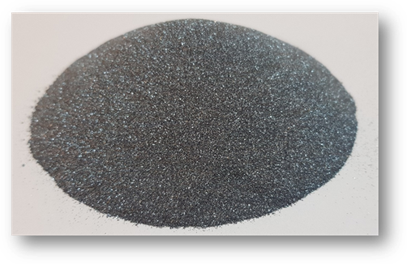
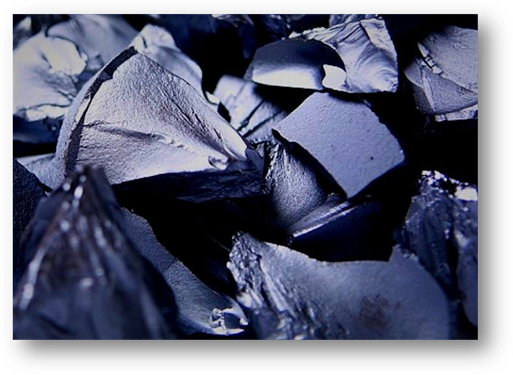

|
丹东盛泰新材料有限公司生产高纯金属硅粉99.99和99.999多晶硅。 金属硅1101纯度有Fe-0.1%、Al-0.1%、Ca-0.01%杂质含量，但我公司生产的金属硅粉比金属硅1101以99.99%纯度高，是Fe- 0.003%以下，Al-0.003%以下，Ca-0.003%以下。 |

粉末的粒径小于100μm。 包装单位为25kg真空包装。 |
|  |
我公司生产和销售高纯度石英石和白硅石， 以及4N金属硅和6N多晶硅，以各种矿物的高纯度加工为基础。 |